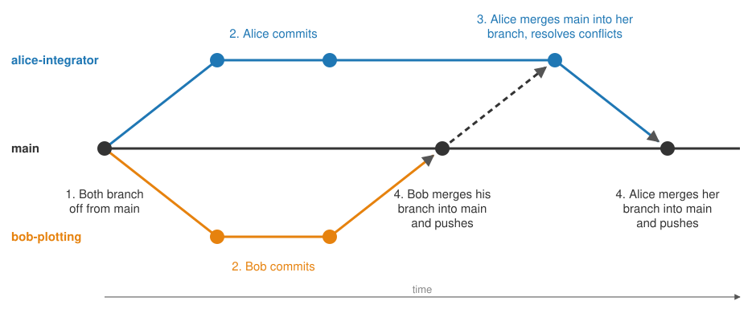

Using Git#
This page covers day-to-day Git usage: making changes in your local clone of a repository, keeping track of the history, working with branches, and sharing your changes through GitHub. It is adapted from the Git manual entry gittutorial, which you can read in your terminal with
man gittutorial
Note
A Git repository is organised into branches, and the main branch is by default called main. Older repositories (created before October 2020) often call it master instead.
The basic workflow#
Nearly all your Git work will follow the same cycle:
Pull the latest changes from GitHub:
git pullEdit your files.
Stage the changes you want to keep:
git add file1 file2Commit the staged changes:
git commit -m "Short description of the change"Push your commits to GitHub:
git push
This is fine when you work alone. When you share a repository with others, do your work on a separate branch instead of directly on main, as described in A workflow for collaborating below.
If you are ever unsure of the state of your repository, run git status. Its output tells you which branch you are on, what has changed, and usually what to do next. Make this a habit, and also make it your first step whenever something goes wrong.
Cloning a repository#
A clone is a local copy of a repository that lives on GitHub (the remote). You make changes in the clone, and synchronise with the remote by pushing your changes up and pulling other people’s changes down. To clone a repo, copy the HTTPS link from the green Code button on the repo’s GitHub page and run
git clone https_link
See Setting up a UiO GitHub repository for the details.
Making changes#
Staging#
Git does not automatically record the changes you make. You first select which changes to include in the next commit, called staging. The same command works for new files and for modified files:
git add file1 file2 file3
Staging does not change anything by itself. To unstage a file, run
git restore --staged file1
Note
Do not add all the files in your project directory. Only track the files you actually work on: source code (.cpp, .hpp, .py), scripts, LaTeX sources and documentation. Compiled files, executables, data files and other auto-generated files should be left out, see Add a README and a gitignore.
To list the files Git is currently tracking, run git ls-files.
Checking what has changed#
git status gives a summary of the situation:
$ git status
On branch main
Your branch is up to date with 'origin/main'.
Changes to be committed:
(use "git restore --staged <file>..." to unstage)
modified: file1
modified: file2
Changes not staged for commit:
(use "git add <file>..." to update what will be committed)
modified: file3
To see the actual changes, use git diff. Without options it shows changes that are not yet staged. With --cached it shows what is staged and about to be committed:
git diff
git diff --cached
Committing#
A commit records a new version of the project, containing all the staged changes:
git commit -m "Short description of the change"
If you leave out -m, Git opens a text editor where you write the message. A good commit message starts with a single short line (less than 50 characters) summarising the change. If you want to add more detail, leave a blank line and then write a longer description.
Remember that only staged changes go into the commit. Run git status before committing to check that you have added everything you intended.
Viewing the history#
To see the history of commits, run
git log
Some useful variants:
git log --oneline # one line per commit
git log --stat # which files changed in each commit
git log -p # the full diff of each commit
git log --oneline --graph # the history as a graph, useful with branches
Branches#
A repository can have several branches of development. A branch lets you work on something without touching main, and is how collaborators avoid getting in each other’s way. The basic commands are
git branch # list all branches, with * marking the one you are on
git branch experimental # create a new branch called experimental
git switch experimental # switch to the branch experimental
git merge experimental # merge experimental into the branch you are currently on
git branch -d experimental # delete the branch (only allowed once it has been merged)
Note
git switch requires Git version 2.23 or later. With older versions, use git checkout instead.
Commits made on experimental are not visible on main until you merge. Note that git merge some_branch merges from some_branch into the branch you are currently on, so run git branch first if you are unsure where you are, and make sure you have no uncommitted changes. If the two branches have changed the same lines, Git reports a merge conflict and leaves both versions in the affected files for you to sort out, see Dealing with merge conflicts.
Syncing with GitHub#
Everything above happens locally on your computer. To share your work, you synchronise with the remote repository on GitHub, which Git by default calls origin:
git pull origin branchname # download new commits on branchname from GitHub and merge them into your local branch
git push origin branchname # upload your local commits on branchname to GitHub
While on a branch that already exists on GitHub, such as main, plain git pull and git push do the same thing.
A workflow for collaborating#
Here is a simple workflow that works well when two or more people share a repository. The rule is: never work directly on main. Each new task gets its own branch, and main is only updated by merging finished branches into it.
Say Alice and Bob share a repo. Alice is going to implement an integration routine, and Bob a plotting script. Each of them does the following:
Start from an up-to-date
mainand create a new branch for the task.Work on the branch: edit,
git add,git commit, as many times as needed.When the task is done, pull the latest
mainand merge it into the branch. If the other person has changed the same lines, the merge conflict shows up here, on your own branch, where you can sort it out without disturbingmain.Merge the branch into
mainand push.

The figure shows the resulting commit history, with the numbers referring to the steps above. Bob finishes first. When he pulls main in step 3, nothing has changed there, so his merge is trivial. Alice finishes later, so when she pulls main she gets Bob’s work and has to merge it into her branch before she can merge her branch into main.
Here are Alice’s commands:
# 1. Create a new branch from an up-to-date main
git switch main
git pull
git branch alice-integrator
git switch alice-integrator
# 2. Work on the branch, repeating as many times as needed
git add integrator.cpp
git commit -m "Add trapezoidal integration"
# 3. Get the latest main and merge it into the branch
git switch main
git pull
git switch alice-integrator
git merge main
# (resolve any merge conflicts, then git add and git commit)
# 4. Merge the branch into main and push
git switch main
git merge alice-integrator
git push
# Optional: delete the branch now that it is merged
git branch -d alice-integrator
Note
Because main was merged into the branch in step 3, the merge in step 4 cannot produce a conflict. If git push in step 4 is rejected because someone pushed to main in the meantime, just repeat step 3 and try again.